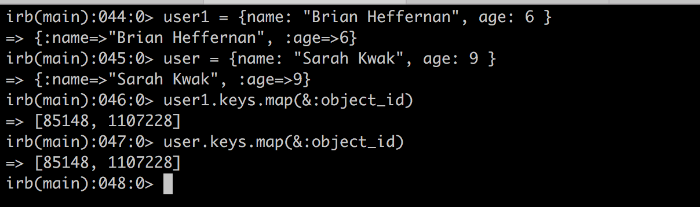
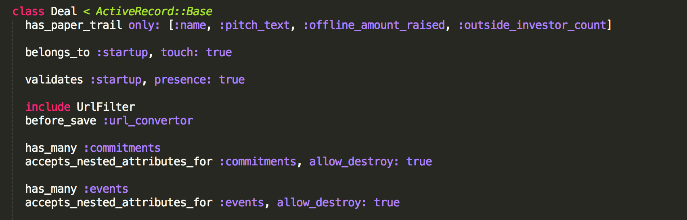

Awesome simple object - Symbol
Oct 16, 2016
What is Ruby's Symbol and why is it awesome?
A Symbol is the most basic Ruby object you can create. It's just a name and an internal ID. Symbols are useful because a given symbol name refers to the same object throughout a Ruby program. Symbols are more efficient than strings. Two strings with the same contents are two different objects, but for any given name there is only one Symbol object. This can save both time and memory.
There are several differences between the implementation of symbols and strings. The most important thing about symbols is that they are immutable. This means that they will never have their value changed. Because of this, symbols are instantiated faster than strings and some operations like comparing two symbols is also faster.
In database, when we use hash, it is perfectly make sense that we use symbol as a key rather than string.
Notice that the object_id of user and user1 are same? Because the keys are symbol.
Most use case of symbol in rails are in the model. Many object name and attribute names can be stored in symbol. This includes method names, fixed concepts, directions, shapes, configuration option names ... Here is the example.
